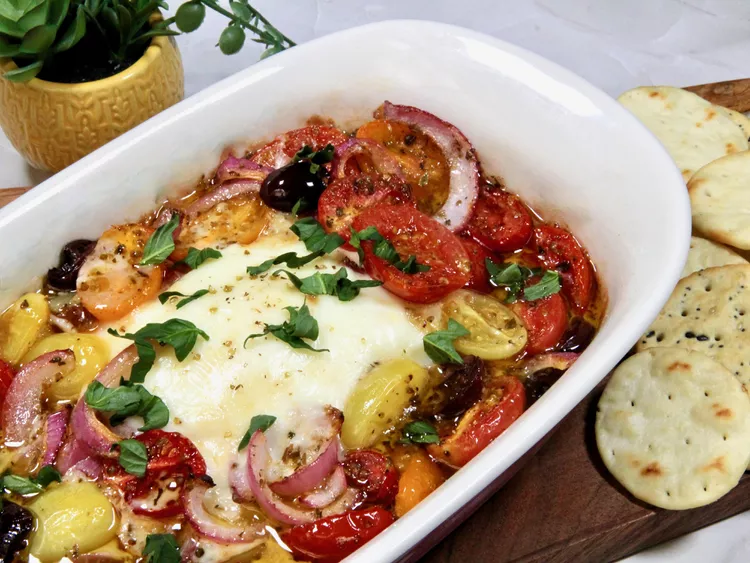

Baked Feta Cheese and Tomato

This baked feta and tomatoes dish makes a great summer appetizer, combining sweet and salty flavors. Serve with crusty bread, pita chips, or crackers.
Ingredients
- 1 (7 ounce) block Greek feta cheese
- 1 tablespoon honey
- drizzle of olive oil
- 2 cups halved cherry or grape tomatoes
- 1/3 cup halved Kalamata olives
- 1/3 cup thinly sliced red onion
- 2 tablespoons olive oil
- 1 clove garlic, minced
- 1 teaspoon dried oregano
- salt and freshly ground black pepper to taste
- chopped fresh basil for garnish (optional)
Steps
- Preheat the oven to 400 degrees F (200 degrees C).
- Place the feta cheese in the center of a baking dish. Spread with honey and drizzle with olive oil.
- In a small bowl, combine tomatoes, olives, red onion, olive oil, and garlic. Sprinkle with oregano, season with salt and pepper, and toss. Arrange the tomato mixture around the feta cheese.
- Bake in the preheated oven until cheese is soft and tomato mixture is bubbly, 20 to 30 minutes. If you want more color, briefly place under the broiler.
- Garnish with fresh basil, if desired, and serve warm.